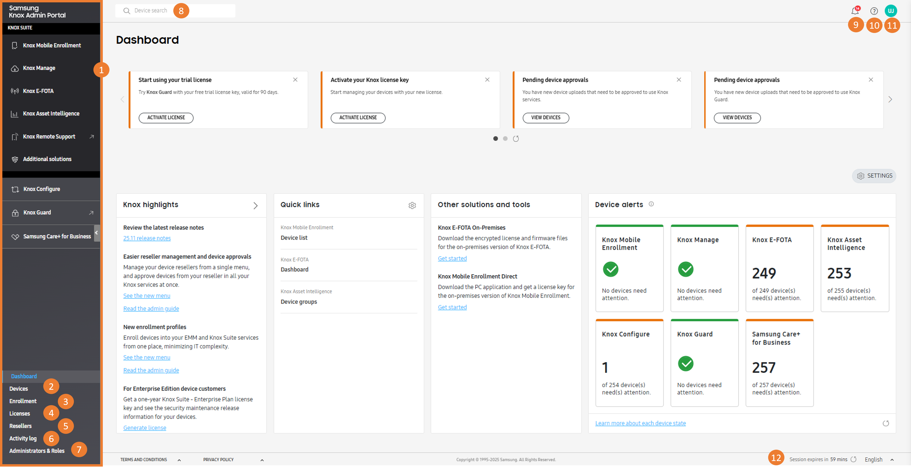

Tour the portal
Last updated November 19th, 2025
The Knox Admin Portal is the hub for all your Knox services, designed to provide a cohesive user experience. Understanding the benefits of the Knox Admin Portal can help streamline your device management operations and help you manage your resources across services more easily.
In this section, we’ll cover how to:
- Get access to the portal
- Select your Knox services
- Navigate the dashboard
- Get started using the portal
Get access to the portal
Before you can start using the Knox Admin Portal, you first need to create a Samsung Knox account.
When you sign in after your company is approved for Knox services, you’re automatically taken to the Knox Admin Portal.
Select your Knox services
When you first sign in to the Knox Admin Portal, you’re greeted with a welcome screen that guides you through the steps to set up the portal.
Then, you’re prompted to select the Knox services you want to use. The services you select define which consoles you see in the portal. Some services are already selected based on the services you were approved for, but you can always show or hide services later. Depending on the additional services you select, you might need to acknowledge some terms and conditions or privacy policies to continue.
Once you confirm your selection, the Knox Admin Portal shows the services you chose in the navigation pane. You can now seamlessly access Knox service features. You’ll only receive system emails for the services you selected.
Navigate the dashboard
By default, you’ll see a dashboard after signing in to the Knox Admin Portal. This dashboard contains resources you might find handy when using Knox services, including links to learn more about new features, additional services, and helpful tools.
After each Knox cloud service update, the What’s New dialog opens and provides a brief overview of the key updates for each service. You can click Learn more next to a service’s name to read the full release notes for that service. Once you dismiss the dialog, it won’t be shown on future sign-ins, but you can view it at any time by clicking > What’s New.
A Get started dialog also provides links to learn how to use Knox cloud services, along with general help links to enhance your Knox Admin Portal experience. You can hide this dialog and re-open it anytime by clicking > Get started.
You can also customize what you see when you sign in — choose between the default dashboard or the dashboard of a preferred service. If you set the landing page to be a service-specific dashboard, you won’t immediately see the Knox Admin Portal dashboard when you sign in anymore. You can also choose which dashboard tiles you want to see, and drag and drop tiles to reorder them. See Customize the portal to learn more.
Get started using the portal
Now that you’ve set up the Knox Admin Portal, you’re ready to start exploring what the portal and its associated Knox services have to offer. The following diagram highlights several key elements of the Knox Admin Portal.

-
The navigation pane, through which you can seamlessly access your Knox services and their features.
-
The Devices page, where you can see a list of devices across all services.
-
The Enrollment page, where you can see a list enrollment profiles across all services.
-
The Licenses page, where you can view and manage your licenses.
-
The Resellers page, where you can view and manage resellers.
-
The Activity log page, where you can view common activity logs across Knox services.
-
The Administrators & Roles page, where you can view and manage admins and roles for your services.
-
The device search bar, where you can search for a device across all services by its unique identifier.
-
The notification center, where you can see notifications from all your Knox services. Notifications for common events that affect multiple services are shown in the Common category.
-
The support center, where you can get technical support, find helpful resources, and view the admin guides. You can also check the operational status and version of Knox services here.
-
The account icon, which hosts your customer ID, Knox account settings, and settings for the Knox Admin Portal and each service.
- If signed in with Samsung account for Business credentials, your account ID is shown below your name.
- If you’re registered for Knox Manage, your Knox Manage tenant ID is also shown here.
-
The footer, where you can view the agreements and privacy policy, view and reset your session’s expiry time, and change the display language of the console.
We’ve also put together a general tutorial to walk you step-by-step through how to get started, which includes links to admin guides for other services. You can refer to each service’s admin guide for more details on how to get started.
In the tutorial, you’ll:
- Learn how to check your licenses
- Add and enroll devices
- Set up Knox services you’ve selected
On this page
Is this page helpful?